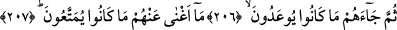

ara cümledir. Hitap, kim olursa olsun hitaba elverişli olan herkesedir. “
(görme)”
bir şeyi haber vermenin en güçlü ve meşhur vâsıtalarından olduğu için “Bana haber
ver/ne dersin” anlamında “
”nin kullanımı yaygınlaşmıştır.
“Ne dersin!” yâni hitap edilmeye elverişli kimse, bana haber ver “Eğer biz onları
yıllarca yaşatsak.” Kureyş müşriklerini dünyada uzun yıllarca güzel bir yaşayış ile
birlikte nimetlerden faydalandırıp istifâde ettirsek ve onları helâk etmesek.
Kelbî der ki: “
”ömürleri müddetince.” demektir.” der. Atâ ise: “Allah’ın dünyayı
yarattığından sona erinceye kadar olan vakti kasdediyor.” der.
206-207.
Sonra
tehdid
edilmekte
oldukları
(azap)
başlarına
gelse!
Faydalandırıldıkları nimetler onlara hiç yarar sağlamayacaktır.
“
” korkutmak demektir.
Yâni uzun süre nimetlerden faydalanmış olmaları, azâbı uzaklaştırma ve hafifletme
konusunda onlara asla hiçbir fayda vermeyecektir. Ya da takdîri şöyledir: Bu kadar uzun
süre nimetlerden faydalanmış olmaları onlara ne yarar sağladı? Yahut da dünya
hayatının metâından faydalandıkları şeyler onlara ne yarar sağladı?
Bu mânâ, haber sorma şekline daha uygun olduğu, fayda ve yararın olmadığını daha
etkili ve tekidli şekilde ifade ettiği için birinci mânâdan daha evlâdır. Sanki hitaba
muhâtab herkes, onlara nimetlerden faydalanmalarının kendilerine ne fayda verdiğini ve
onları neden kurtardığını haber vermeye zorlamış, fakat kimse asla bir cevap
verememiştir.
Rivâyete göre Meymûn b. Mehrân, Ka’be’yi tavaf ederken Hasan Basrî ile
karşılaştı. Onunla karşılaşmak da istiyordu. Onu görünce: “Bana nasihat et.” dedi.
Hasan Basrî ise sadece bu âyeti okudu ve başka bir şey ilave etmedi. Bunun üzerine
Meymûn: “Bana öğüt verdin ve beliğ söz söyledin.” dedi.
Yine rivâyet edildiğine göre Ömer b. Abdulazîz her sabah divanına oturunca,
düşünmek ve öğüt almak için bu âyeti okurdu.
Cihan, insan aldatan bir vefasızdır
O insanın gönlündeki sabır ve tahammülü çalar
Dikkat et, onun sunduğu makama esir olma
Onun takdim ettiği malın da peşinden ağlayıp inleme
Sen bu durumda iken bakarsın ölüm geliverir
Onun ne malı kurtarır seni ne de makamı
Yahya b. Muâz der ki: “İnsanların en gafil olanı, fânî hayata aldanan, onun geçici